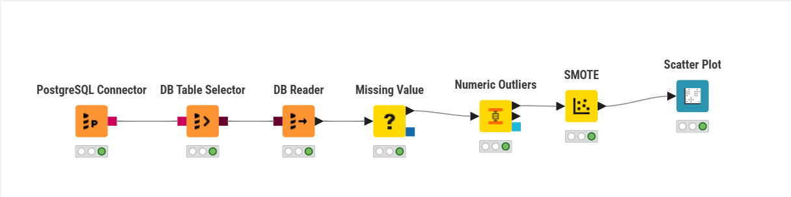
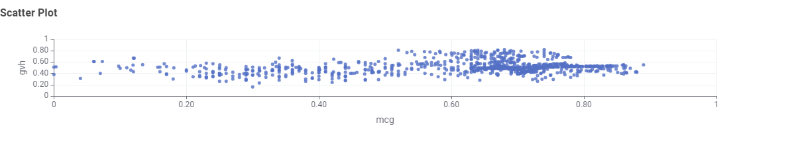

Outlier Detection dan Unbalanced Dataset Analysis di KNIME#
Tugas Outlier Detection, Missing Values, Unbalanced Dataset Analysis Dengan KNIME#
Tujuan#
Proyek ini bertujuan untuk:
Melakukan pembersihan data (data preprocessing).
Mendeteksi dan menangani outlier pada dataset.
Mengatasi ketidakseimbangan kelas menggunakan metode SMOTE (Synthetic Minority Oversampling Technique).
Melakukan visualisasi hasil dengan Scatter Plot untuk melihat distribusi data setelah balancing.
Diagram Workflow KNIME#
Berikut diagram workflow yang digunakan pada proyek ini.

Langkah-langkah Analisis#
1. PostgreSQL Connector#
Node ini digunakan untuk menghubungkan KNIME dengan database PostgreSQL. Setelah koneksi berhasil, node berikutnya dapat mengakses tabel di database secara langsung.
2. DB Table Selector dan DB Reader#
DB Table Selector digunakan untuk memilih tabel dari database.
DB Reader membaca isi tabel menjadi data table di KNIME.
Dataset berisi kolom:
protein_name, mcg, gvh, lip, chg, aac, alm1, alm2, localization_class
3. Missing Value#
Node Missing Value digunakan untuk menangani nilai kosong.
Kolom numerik diisi dengan nilai rata-rata (mean).
Kolom kategorikal diisi dengan nilai yang paling sering muncul (mode).
Output: dataset tanpa nilai kosong.
4. Numeric Outliers#
Node Numeric Outliers mendeteksi nilai-nilai ekstrem berdasarkan metode statistik seperti Z-score.
Baris dengan nilai jauh dari distribusi normal dianggap sebagai outlier.
Output: dataset dengan label apakah baris tersebut termasuk outlier.
5. SMOTE (Synthetic Minority Oversampling Technique)#
Metode ini digunakan untuk menyeimbangkan distribusi data yang tidak seimbang antar kelas.
Pengaturan:
Class column:
localization_classNearest neighbors: 5
Oversample minority classes: aktif
Output: dataset dengan distribusi kelas yang seimbang.
6. Scatter Plot#
Node Scatter Plot digunakan untuk melihat hubungan antara dua fitur numerik, misalnya:
Horizontal (X):
mcgVertical (Y):
gvh
Visualisasi membantu memeriksa persebaran data setelah SMOTE.

Hasil Analisis#
Tahapan |
Hasil |
Keterangan |
|---|---|---|
Missing Value |
Nilai kosong berhasil ditangani |
Semua kolom diisi dengan metode statistik |
Numeric Outliers |
Outlier terdeteksi pada beberapa data |
Bisa dianalisis lebih lanjut |
SMOTE |
Dataset seimbang antar kelas |
Kelas minoritas berhasil ditambah |
Scatter Plot |
Distribusi data terlihat merata |
Pola antar fitur menjadi lebih seimbang |